通知¶
虽然使用构建服务器构建你的软件是重要的事情，但更重要的是让人们知道你的构建服务器不能做那些。任何持续集成环境价值命题的一个关键部分是提高项目健康状况的信息流程，比如单元测试或者集成测试套件回归测试失败，又或者其他质量相关的下降问题，比如代码覆盖率或者是代码质量度量。在所有情况下，CI 服务器必须尽可能快的让相关人员知晓发生的任何问题。这就是我们所说的通知。
这两种主要类别的通知策略，我们称之为被动策略呵主动策略（拉/pull或推/push）。被动通知（拉）需要开发者自觉的查阅最新的构建状态，包括 RSS 源、构建消息分发器及（某些范围内的）电子邮件。主动通知（推）在构建失败时会主动提醒开发人员，并且包括诸如桌面通知、聊天工具和短信等方法。这两种方法各有优缺点。被动的通知策略，如构建消息分发器可以提高公众关于失败的构建意识，并且能帮助建立将修复失败构建提升为高优先级处理的团队文化。更直接形式的通知形式可以积极鼓励开发人员通过自己的双手更快的修复中断的构建。
配置邮件服务器¶
email 是 Jenkins 最基本的通知技术 —— 在一个构建失败后，他将给提交代码变更的开发人员及可选的其他团队成员发邮件。所以，Jenkins 需要知道你的邮件服务器。
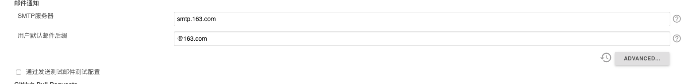系统管理员的 email 地址是 Jenkins 发送通知的邮件发送方。你还可以单击 Test configure（测试配置）按钮来检测它，Jenkins 会发送一个测试邮件到这个地址。
Jenkins 还提供了更复杂的邮件配置，使用如 SMTP 认证和 SSL 等高级特性。可以通过 Advanced（高级）按钮来配置这些选项。
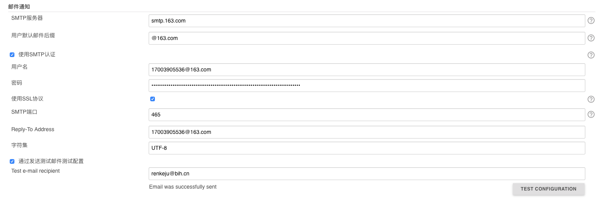配置成功后，我们可以到 job 中进行配置：
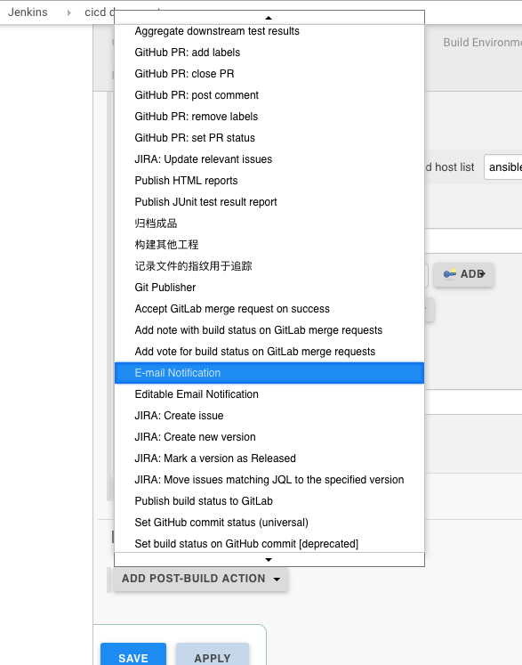 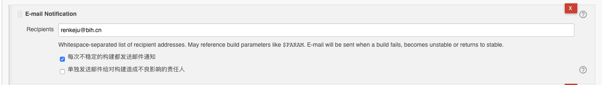增强版电子邮件通知¶
Email-ext 插件允许你定一个更精致的电子通知策略。这个插件增加了一个 Editable Email Notification 复选框，从而有效的取代了标准的 Jenkins 电子邮件通知。在这里，你可以定义默认收件人列表为微调的电子邮件内容，而且还定义一个更精确的通知策略（不同的事件用不同的消息和收件人列表。）请主意，一旦你已经为构建作业安装、配置此插件，就可以停用正常的电子邮件配置。
这个插件由两个相关但不同的功能。首先，它可以让你自己定义电子邮件通知消息。你可以从大量的预定义的标签中选择创建自己的自定义邮件的标题和正文。你可以使用熟悉的美元符号（如 ${BUILD_NUMBER} 或 $BUILD_BUMBER ）在消息模版中包括标签。一些标签接收参数，你可以指定使用 name=value 格式（如 ${BUILD_LOG, maxLines=100} 或 ${ENV, var=”PATH”}）。其中更有用的标签如下：
${DEFAULT_SUBJECT}
在 Jenkins 系统配置页面配置的默认电子邮件主题
${DEFAULT_CONTENT}
Jenkins 系统配置页面配置的默认电子邮件内容
${PROJECT_NAME}
项目的名称
${BUILD_NUMBER}
当前构建号
${BUILD_STATUS}
当前构建状态
${CAUSE}
构建原因
${BUILD_URL}
Jenkins 对应构建作业页面的链接
${FAILED_TESTS}
如果失败的话，显示有关失败的单元测试信息
${CHANGES}
显示自上次构建以来所做的修改
${CHANGES_SINCE_LAST_SUCCESS}
自从上次成功构建以来所做的所有参数
通过单击 Context Token Reference 标签相对的 Help 图标，你可以得到可用的标识的完整列表以及其可以接收参数的选项。
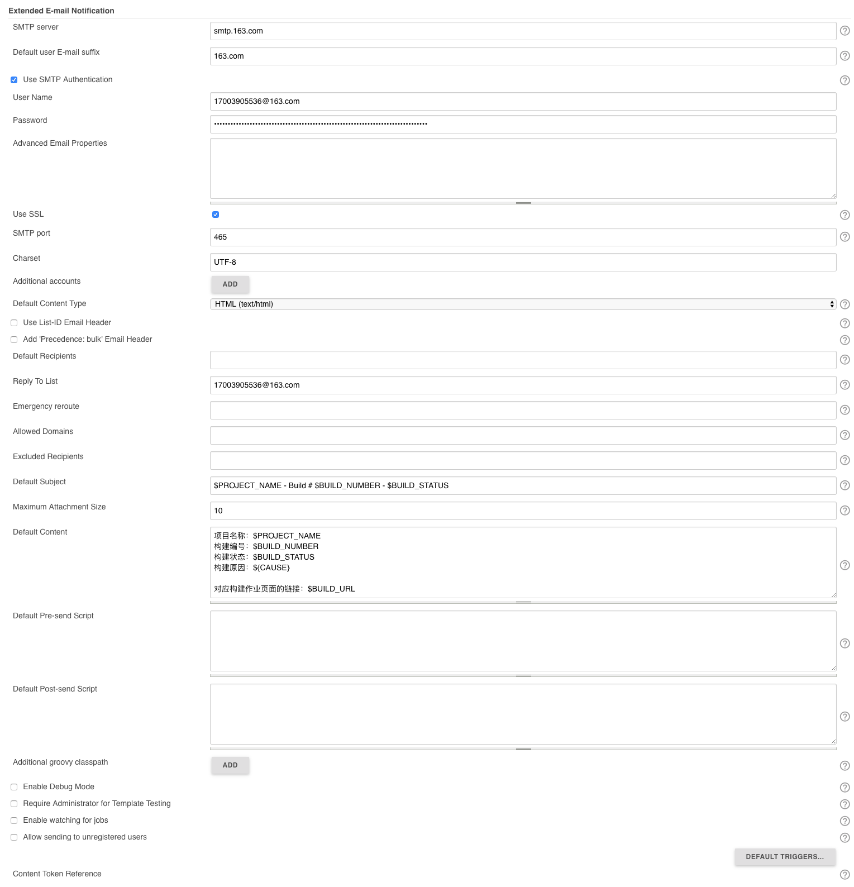- SMTP server : SMTP 服务器地址
- Default user E-mail suffix : 默认用户邮件后缀
- 勾选 Use SMTP Authentication : 用户名和密码填自己的
- 勾选 Use SSL : 则 SMTP port 端口改为 465
- SMTP port : 默认端口 25
- Default Content Type : 邮件文档类型
- Default Recipoents : 默认接收人列表，用逗号进行分割
Attention
上面配置中，凡是以 Default 开头的名称，都可以在 job 的配置中当做变量使用。比如：默认的收件人地址。
在 增加构建后的操作步骤，添加增强版邮件通知
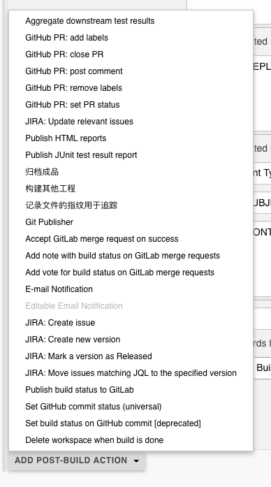 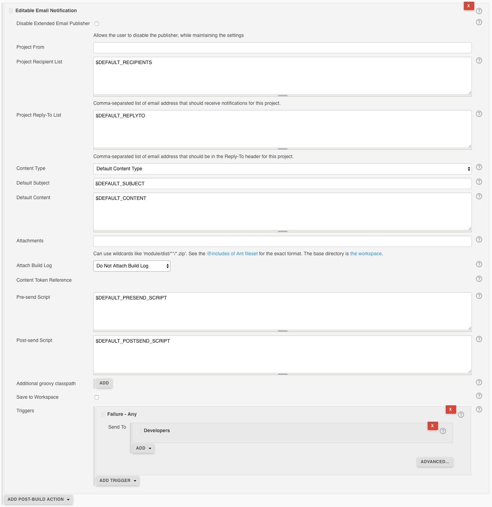Note
原本默认是 Developer List，这个默认是一个官方的错误。请自行添加一个 Recipient List，否则接收不到邮件。
Disabke Extended Email Publisher
勾选后，邮件就不发送，看自己的情况，如果你想调试某些东西，又不想发邮件出去就可以勾选这个。
Project Recipient List
收件人地址，多个收件人邮件地址用都好进行分割；项使用全局默认配置的话，可以使用 $DEFAULT_RECIPIENTS
Project Reply-To List
允许回复人的地址；想使用系统设置中的默认值的话，可以使用 $DEFAULT_REPLYTO
Content Type
邮件文档的类型，可以设置 HTML 等格式
Default Subject
默认主题，也就是邮件标题；同理可以使用 $DEFAULT_SUBJECT
Default Content
默认邮件内容，这是关键。你可以自定义模版
${SCRIPT, template="groovy-html.template"}如果不想使用模版的话，可以通过使用 Jenkins 自身提供的变量来定义。Attach Build Log
发送的邮件是否包含日志
Triggers
假设最后一个不修改的话，邮件是接收不到的，这是官方留下的一个大坑，一定要自己再添加一个 Recipient List
邮件模版编写¶
官方给出的 groovy 模版
在 email-templates 文件夹中创建一个文件
mkdir -p /var/lib/jenkins/email-templates
cd /var/lib/jenkins/email-templates
wget https://raw.githubusercontent.com/jenkinsci/email-ext-plugin/master/src/main/resources/hudson/plugins/emailext/templates/groovy-html.template
之后你可以根据自己的需要进行定制修改。
之后在 【系统管理】中选择【系统设置】，下拉到 Extended E-mail Notification，在 Default Content 框内输入 ${SCRIPT, template="groovy-html.template"}。
当项目执行结束后，你就可以收到如下这样的邮件：
RSS 订阅¶
Jenkins 的主要功能之一，Jenkins 集成了 RSS 的通知机制 对于 Jenkins 的 RSS 构建通知，有 Job 级别的 RSS 构建通知和 View 级别的 RSS 构架通知：
- 可以订阅某个 Job 的构建情况
- 也可以额订阅一组 Job（比如一个 View 下的所有 Job）的构建情况
Job 级别的 RSS 构建通知¶
对于每个 Job，在它的 Build History（构建历史）下侧，有两个 RSS 链接：RSS for all、RSS for failures
其中，每个RSS链接的路径如下：
- RSS 全部的链接路径为：<JENKINS_URL>/job/<JOB_NAME/rssaAll
- RSS 失败的链接路径为：<JENKINS_URL>/job/<JOB_NAME>/rssFailed
View 级别的 RSS 构建通知¶
对于每个 View，在 View 的右下方，有三个 RSS 链接： RSS for all、RSS for failures、RSS for just latest builds
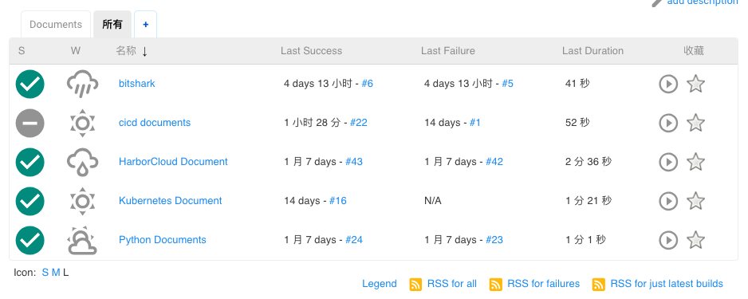其中，每个 RSS 链接路径如下：
- RSS 全部的链接路径为：<JENKINS_URL>/view/<VIEW_NAME>/rssaAll
- RSS 失败的链接路径为：<JENKINS_URL>/view/<VIEW_NAME>/rssFailed
- RSS 最新的构建的链接路径为：<JENKINS_URL>/view/<VIEW_NAME>/rssLatest
浏览器订阅实施构建通知¶
Firefox 浏览器，有 RSS 收阅功能，称为实时书签，无需安装任何插件。
下面使用 Firefox 的实时书签进行 RSS 订阅 Jenkins 某个 Job 的情况为例：
点击 Jenkins 某个 Job 下 RSS 全部链接，会跳转到 <JENKINS_URL>/job/<JOB_NAME>/rssAll 页面
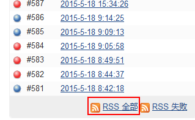 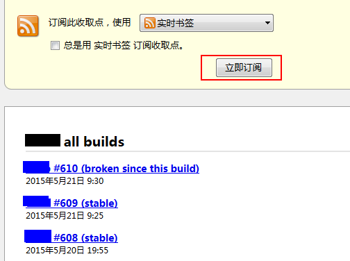
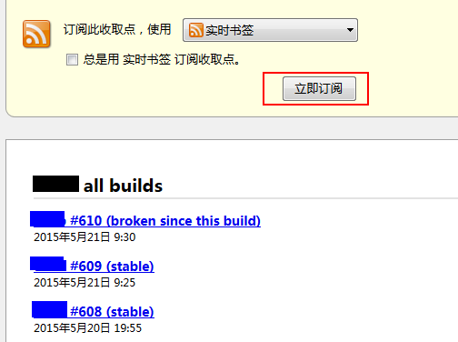
默认订阅方式为实时标签，点击立即订阅即可，弹出如下对话框，设置名称及选择文件夹，点订阅后，在书签工具栏便会显示实时书签
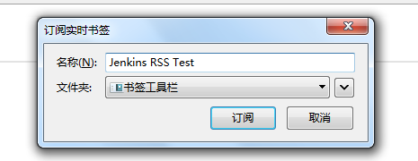 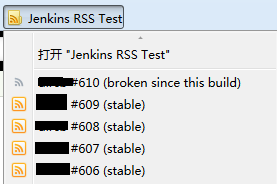点击相应的链接便可访问，其中灰色图标表示已阅读状态，橙色图标表示等待阅读状态。